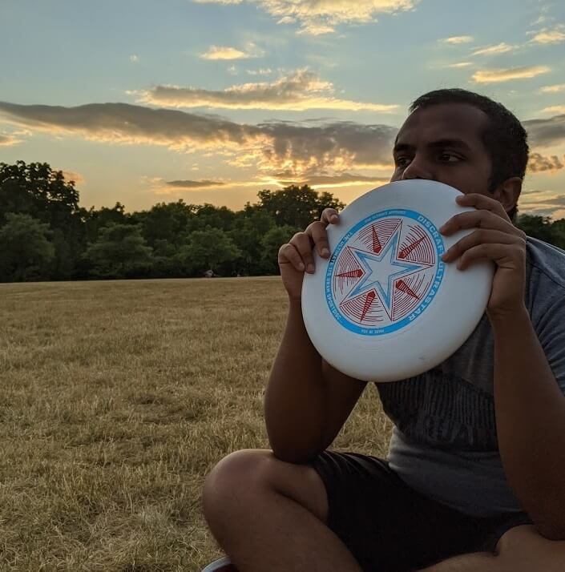

Bachelors in Space Engineering, York University, Toronto, ON
Fall 2017 - Summer 2022
Hi, there! My name is Mubeen Padaniya and I am really excited to see you here. I was born in Mumbai, India in 1999, where I spent most of my life. In seventh grade, I had the special opportunity to study IB in an up and coming residential school, The Aga Khan Academy in Hyderabad, India. In 2017 I graduated from high school and with much deliberation came to study undergrad in Space Engineering at York University in Toronto, Canada.
Since childhood, I have always been quite interested in the mysteries of the universe. I remember my sister giving me The Astronomy Encyclopedia for my 8th birthday. I used to sit in one corner of the house understanding the wonderful phenomena in space such as nebulas, galaxies and stars. In school, physics was my favourite subject and I was always involved in scientific debates, clubs and competitions, being inquisitive about any new concepts I learned. This interest gradually progressed as I selected to do my high school thesis in the study of radiation blocking properties of linear and particulate polarizers. Eventually I decided to pursue Space Engineering at York University in Canada.
I really love to learn more about almost anything from science to phenomena. I spend most of my leisure time reading articles online, watching infotainment channels on Youtube or even discussing various matters with my colleagues. I am not good at small talk though. 
I am not a sports fanatic. I don't follow any clubs or teams but I still enjoy playing and watching games with my friends. Almost every evening we get out. If the weather is good we might have a game of ultimate frisbee, soccer, football or basketball. Otherwise we would be playing futsal or basketball indoors.
Being an independent student, I started cooking as soon as I got my own place. But instead of a neccesity, it has turned into a therapeutic activity for me. Like after a stressful exam, I would often try cooking new recipes.
I think a really important metric in planning one's ambitions visualizing where you want to be in five years. And then pan out the steps you need to do to get there. The success of this strategy is dependent on how plausible is the vision.
For the five years after my graduation I want to be working in either robotics or remote sensing at reputable aerospace company like MDA. This is a challenging goal as the competition is high and I haven't done COOP yet. If I graduate without any COOP experience, I would want to gain some professional experience in tech sector working with a engineering firm or startups, probably on jobs related to programming hardware. The skills, knowledge and experience could translate into the aerospace industry and this would also provide me with a backup.
If I am working in my dream job, I want employ the concepts of AI and computer vision to develop a new line of robotic devices that can easily self-replicate and improve over time mechanically and intellectually. I also want my design to focus on scalability based on materials available, especially if used for interplanetary systems, which can make things greatly cheaper. This aligns a vision that humanity's interplanetary expansion is rapid, sustainable and industry focused; that can meet the ever growing material and energy needs while making earth greener.